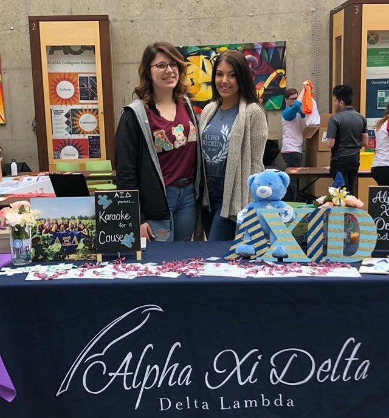
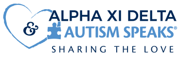

What is Autism?
"Autism, or autism spectrum disorder (ASD),
refers to a broad range of conditions characterized by
challenges with social skills, repetitive behaviors,
speech and nonverbal communication.(What is Autism?, Autism Speaks)"
"We now know that there is not one autism but many
subtypes, and each person with autism can have unique
strengths and challenges. (What is Autism?, Autism Speaks)"
Our national philanthropy is
Autism Speaks which is dedicated to helping to raise money and awareness
for families and individuals that are affected by autism.

- Did you know?
- 1 in 59 children is diagnosed with autism.
- 1 in 37 boys is diagnosed with autism.
- A child is diagnosed with autism every 8 minutes.
- Autism costs a family $60,000 a year on average.
- (About Our Partnership, Alpha Xi Delta)
Our chapter supports the local Rochester Autism Speaks Walk by volunteering at it
each year. The week leading up to the walk we hold a fundraising competition between different
organizations that want to participate. There are different events throughout the week that we hold
such as a pancake dinner to raise money for autism awareness and a presentation and information session
to better inform the RIT community about autism.
The second major philanthropy event we hold is our Karaoke for a Cause event at Lovin' Cup here at RIT,
where many different people and organizations come to help raise money and have a lot of fun participating
in karaoke.
Throughout the school year we promote autism awareness and understanding throughout
RIT's campus by tablestanding and holding events. As a chapter we also enjoy going out into the community
to volunteer for our philanthropy through a program called AutismUp to help teach kids how to play basketball.
